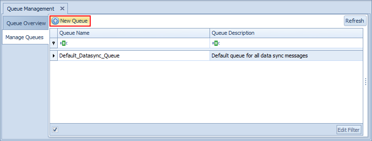
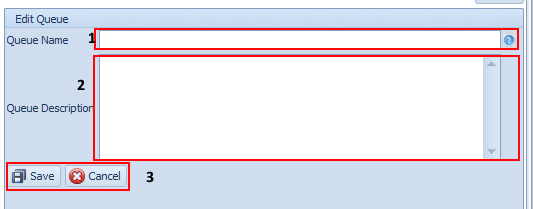
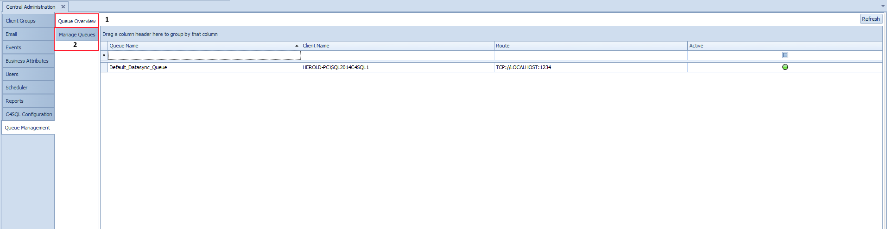

Queue Management Overview
The Queue Management Administration screen is used for configuring the Conductor4SQL data sync queues, you can create new queues or remove existing ones if they not being used anywhere.
Manage Queues
The Manage Queue tab is used for adding or removing queues
Tip
For each database that you are syncing is preferable to use different Queue for each database. E.g. if you want to sync two databases called RetailPOS and BackOffice at all your clients. You would make two queues: one called RetailPOS and one called Backoffice. This will allow the initial sync for these two databases to occur in parallel.
The screen below will show all the currently defined custom data sync queues. If you are starting out you will see a single Queue called Default_Datasync_Queue this queue will be used for datasync if you do not assign another queue.

To add a new Queue click on the New Queue button to show the "Edit Queue" form:

Fill in the Queue Name and Queue Description fields
Select the Save button to save your new queue
Note
You cannot edit queues but you can delete them.
You cannot delete a queue that has one or more data sync tables linked to the queue.
The Default_Datasync_Queue cannot be deleted
Queue Overview
The Queue Overview tab is used to see which queues are available at each client. Once a new queue is created it may take some time for the queue to be available at all the clients.
If a queue is unavailable it will appear as a Red dot under the Active column, once the queue is available it will appear as a Green dot.
